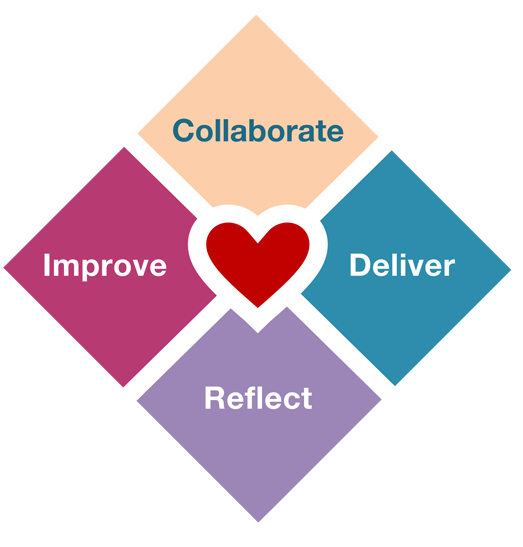

Back to basics
Doing plannings, daily standups and retrospectives does not make a company Agile. Agile is a mindshift and it's hard... many companies try to be Agile only to fail in the process and get no results.
Studying modern movements, such as Heart of Agile and Modern Agile, are cornerstones to getting the gist of what the Agile mindset represents.
More about Heart of Agile More about Modern Agile
